HBase
参考：尚硅谷Hbase
制作人：小邹[yw_forgit@163.com]
1、 HBase简介
Hbase的原型是Google的BigTable论文，收到该论文思想的启发，目前作为Hadoop的子项目来开发维护，用于支持结构化的数据存储。
版本：2.0.5
HBase的特点
1）面向列
2）极易扩展
HBase的扩展性主要体现在两个方面，一个是基于上层处理能力（RegionServer(类似于DataNode)）的扩展，一个是基于存储的扩展（HDFS）。
通过横向添加RegionServer的机器，进行水平扩展，提升HBase上层的处理能力，提升HBase服务更多Region的能力。
备注：RegionServer的作用是管理region、承接业务的访问，这个后面会详细的介绍通过横向添加Datanode的机器，进行存储层扩容，提升HBase的数据存储能力和提升后端存储的读写能力。
3）高并发
由于目前大部分使用HBase的架构，都是采用的廉价PC，因此单个IO的延迟其实并不小，一般在几十到上百ms之间。这里说的高并发，主要是在并发的情况下，HBase 的单个IO延迟下降并不多。能获得高并发、低延迟的服务。
4）稀疏
（基于列的都是稀疏性的）
稀琉主要是针对HBase列的灵活性，在列族中，你可以指定任意多的列，在列数据为空
HBase的架构
mysql的为空就是null，还是会占用空间的，而稀疏性的为空是不占空间的。
一个大的表，被切割的情况
HBase中的角色
1）Client
Client包含了访问Hbase的接口，另外Client还维护了对应的cache来加速Hbase的访问，比如cache的.META.元数据的信息。
2）Zookeeper
HBase通过Zookeeper来做master的高可用、RegionServer 的监控（监控是zk监控的，然后通知master，列族的切割这些都是master做的）、元数据的入口（列族被切割之后，想要找其中的一块，怎么知道在哪里，这就是找zk，即元数据的入口）以及集群配置的维护等工作。具体工作如下：
① 通过Zoopkeeper来保证集群中只有1个master在运行，如果master异常，会通过竞争机制产生新的master提供服务。
② 通过Zoopkeeper 来监控RegionServer的状态，当RegionSevrer有异常的时候，通过回调的形式通知Master RegionServer上下线的信息。
③ 通过Zoopkeeper存储元数据的统一入口地址。
3）Hmaster
master节点的主要职责如下：
① 为RegionServer分配Region
② 维护整个集群的负载均衡
③ 维护集群的元数据信息
④ 发现失效的Region，并将失效的Region分配到正常的RegionServer 上
如下图，假如左边HRegionServer（HRS1）挂了，HMaster就会把他的Region给其他的HRS管理，HRS1虽然挂了，但是元数据在HMaster有，文件数据又在HDFS上（虽然看起来Region是在HRS1上），所以HRS1挂了，HMaster还是能把数据给其他的HRS管理。
⑤ 当RegionSever失效的时候，协调对应HLog的拆分。
4）HRegionServer
HRegionServer（简称HRS，又简称为RS）直接对接用户的读写请求，是真正的“干活”的节点。它的功能概括如下:
① 管理master为其分配的Region
② 处理来自客户端的读写请求
③ 负责和底层HDFS的交互，存储数据到HDFS
④ 负责Region变大以后的拆分（master发现表太大就会发指令让HRS切）
⑤ 负责StoreFile的合并工作（master发现有些小文件就会发指令让HRS切）
5）HDFS
HDFS为HBase提供最终的底层数据存储服务（所以HBase不需要副本），同时为HBase 提供高可用(HLog存储在HDFS)的支持，具体功能概括如下：
① 提供元数据和表数据的底层分布式存储服务
② 数据多副本，保证的高可靠和高可用性
6）Write-Ahead logs（HLog）
7）Region
8）Store
9）MemStore
10）HFile
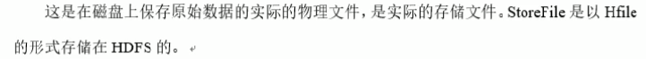
2、HBase安装
需要Zookeeper、Hadoop（HDFS、Yarn）集群的基础。
启动Zookeeper集群
进入zk的bin目录，启动zk

启动Hadoop集群
在namenode（master）主机启动HDFS集群
在ResourceManager（master）启动Yarn集群
下载HBase
我的Hadoop是2.7.3，打钩的都可以选，这里选择HBase2.0.x
https://hbase.apache.org/downloads.html
然后就下载了这厮
四台机子都上传hbase压缩包，我统一都放到 /usr/local/ 目录下（HadoopMaster作为HBase的HMaster，HadoopSlave1、2、3分别作为HBase的HRegionServer）
然后四台都执行解压
都改下目录名称
看一眼hbase的根目录、bin、conf目录
修改hbase-env.sh配置文件
这是我的Java目录：/usr/java/default
编辑hbase-env.sh
取消JAVA_HOME配置的注释，并且修改其路径
取消HBASE_MANAGES_ZK配置的注释，并改为false，默认是true（true表示使用HBase内部的zk，false表示使用外部的，即使用我们之前使用过的zk的集群，相关配置后面有）
修改hbase-site.xml配置文件
默认只是空的配置
一起编辑配置
配置的内容
|
<configuration> <property> <!-- HBase的数据存到HDFS上 --> <name>hbase.rootdir</name> <!-- 这是hdfs的master主机，根目录下的hbase目录 --> <value>hdfs://master:9000/hbase</value> </property> <property> <!-- HBase是否启用集群 --> <name>hbase.cluster.distributed</name> <value>true</value> </property> <property> <!-- HBase的端口，默认是16000 --> <name>hbase.master.port</name> <value>16000</value> </property> <property> <!-- 配置zk集群 --> <name>hbase.zookeeper.quorum</name> <!-- slave1、2、3是主机名，组成zk集群 --> <value>slave1:2181,slave2:2181,slave3:2181</value> </property> <property> <!-- zk存储数据的地址，zk集群本身也有数据的地址，是否是覆盖？而且这数据最后是存到HBase的master还是在zk集群的本地上呢？ --> <name>hbase.zookeeper.property.dataDir</name> <value>/home/data/zkData</value> </property> </configuration> |
创建目录 /home/data/zkData
修改regionservers配置文件
看一下这个架构图，HRegionServers（regionserver）regionserver就跟HDFS的DataNode一样，而HMaster（master）就跟HDFS的NameNode一样。
而regionservers文件的作用，就跟HDFS的slaves文件一样，regionservers也只需要在HMaster上编辑即可。
编辑regionservers
主机名，都是在hosts文件对应着不同的ip
软连接Hadoop配置文件到HBase
软连接Hadoop配置文件到HBase，前面 hbase.rootdir = hdfs://master:9000 只是配置了hbase存放目录是hadoop集群，但是具体用哪个集群不知道，这里软连接过来就是让HBase知道用哪个集群（总觉得不对，应该是启动的时候需要Hadoop的环境配置吧）
|
ln -s /usr/local/hadoop/etc/hadoop/core-site.xml
/usr/local/hbase/conf/core-site.xml ln -s /usr/local/hadoop/etc/hadoop/hdfs-site.xml
/usr/local/hbase/conf/hdfs-site.xml |
软件过去之后，只要修改Hadoop原有的配置，这里软连接的也是同一份
启动HBase
启动整个集群
[root@master hbase]#
bin/start-hbase.sh
关闭集群
[root@master hbase]# bin/stop-hbase.sh
访问http://192.168.56.100:16010 ，随便看看
查看日志，看看集群是否正常启动

我的集群没有问题，就有个一直等待hdfs的安全模式：2019-06-17 14:05:05,802 INFO [Thread-14] util.FSUtils: Waiting for dfs to exit safe mode...
在Hadoop的master执行：hadoop dfsadmin -safemode leave ，退出安全模式即可。
然后查看HDFS目录就有了hbase的目录
单个服务启动
启动HBase的HMaster
[root@master
hbase]# bin/hbase-daemon.sh start master
启动HBase的HRegionServer（注意regionserver不是regionservers文件），我这里用master启动截图的
[root@master
hbase]# bin/hbase-daemon.sh start regionserver
时间同步问题
集群之间时间差不能太大，否则启动会报错
3、HBase Shell操作
进入HBase客户端命令行：hbase shell
（我随便选master主机）

help可以查看帮助命令
查看当前数据库有哪些表
创建表
student是表名，info是列族
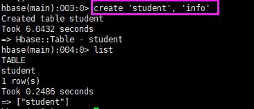
插入数据到表
Hbase只有byte数组类型，存储到最后都是byte类型，但是有工具类，可以转为我们需要的类型。info:name是列族+列，列无法脱离列族单独存在。
put的一些参数
扫描查看表的数据
先插入多一点数据
扫描
对应的表结构
限制范围的扫描（包括1001，不包括1002），按照rowkey字典序排序，字典序就是一位一位的比较。
查看表结构
可以看到这个表有个列族名叫info，还有versions版本为1
变更表信息
更新student表的info列族的版本为3
更新版本为3之后，就可以最多保留3个版本（同表同列族同列名），超过就会覆盖，不设置版本的时候，默认只有一个版本，更改就会覆盖。
更新指定字段的数据
直接put多一次覆盖即可
查看“指定行”或“指定列族:列”的数据
统计表数据行数
行数是看rowkey的
删除数据
delete
delete只是删除最新版本的
delete默认带当前时间戳
delete默认传递当前时间的时间戳，意思是当前时间的所有数据都打标记进行删除，所以你后来插入的数据的时间戳在删除之前，同样是被删除了。（所以集群的时间同步问题很重要）
deleteall
deleteall是删除所有版本
清空表
删除表
删除表要先disable，再drop，直接drop会报错
4、HBase数据结构
RowKey
Column Family（列族）
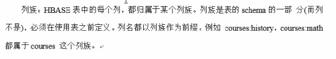
Cell
TimeStamp
与version相关。

命名空间
命名空间类似于数据库，权限一般不会使用，太细了，一般都是在HBase访问这层做权限，不在命名空间这层做。
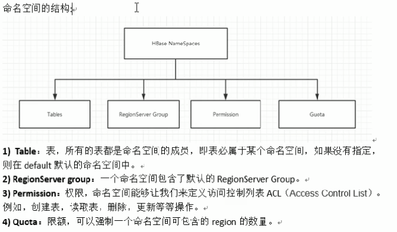
咦，这个HRegionServer，现在才看到，可能是因为我插入数据之后，才会有？
看一下命名空间
HDFS文件系统也可以看到
hbase是系统使用的，放元数据的
创建命名空间
默认的命名空间则会省略
删除命名空间：drop_namespace 'bigdata'
5、HBase原理
HBase读数据流程
查看读数据流程的一些信息：
meta表
点击hbase:meta，可以看到meta表在我的slave1主机
去zk看meta-region-server表在我的slave1主机
查看meta表在我的slave1上，server这个列表示这个表在哪个服务器维护着。
点击student表
可以看到student表在我的slave3上维护着（因为只有一个Region，故只有一个主机对应），Start key和End
Key为空表示整个表都在这个主机上。
在举一个例子
读数据，跟HMaster没有关系，挂不挂都不会影响读取数据。
HBase写数据流程
如果只是写入数据，没有元数据的更新，那么HMaster挂了也能正常写入数据，但是合并、切分才会用到HMaster，所以表太大的时候HMaster挂了，才会有影响。
数据flush过程
官网的安装包，解压他
然后可以找到hbase-default.xml这个配置文件，都是默认的配置
顺便提一下这个临时目录
找到hbase.regionserver.global.memstore.size
即所有的MemStore的内存加起来到了堆内存（是只一个RS节点的总的堆内存）的40%，就全部刷写，结合一下架构图看下

找到hbase.regionserver.optionalcacheflushinterval
即时间有了一小时，所有的RS都会触发flush
找到hbase.hregion.memstore.flush.size
小文件就会合并，结合架构图

数据合并过程
找到hbase.hregion.majorcompaction
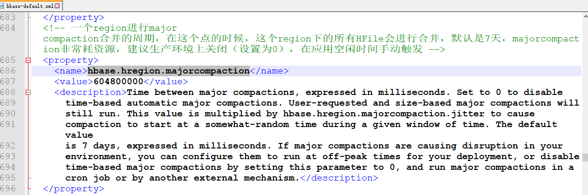
找到hbase.hstore.compactionThreshold
不建议使用多个列族
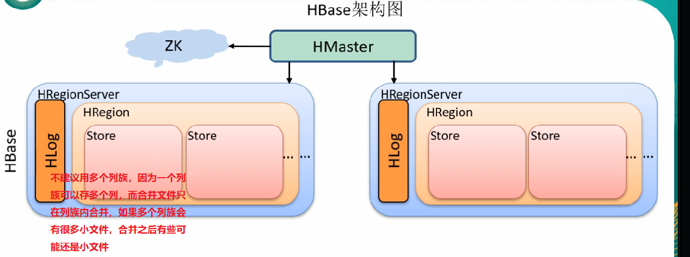
删除数据的时候一开始是打标记的，真正删除数据是在合并的这个时候删除的。
缓存超过75%的内存，就会扔掉数据。
6、HBase的API操作
新建项目
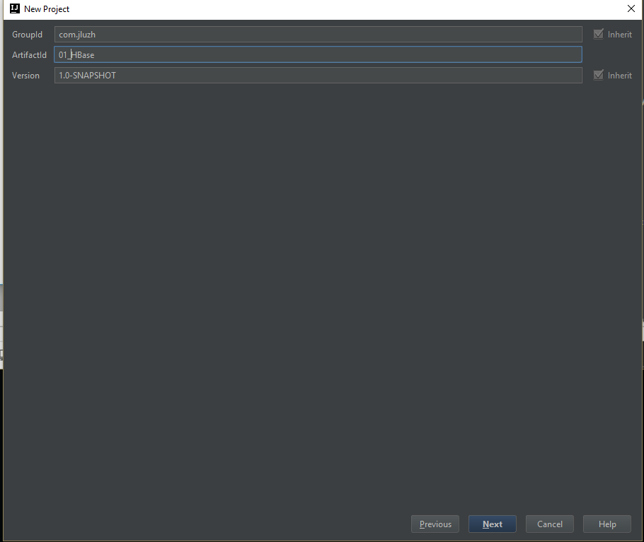
添加依赖
pom.xml文件
|
<?xml version="1.0" encoding="UTF-8"?> |
HBaseAPI
注意点
这个连接zk的端口不需要指定，配置已经默认有了
hbase-default.xml配置默认了
还有一个问题是，admin.tableExists卡主的问题，因为开发是在windows开发，测试也是，而zk集群（连接HBase需要连接zk集群）在Linux上，主机名在Linux上映射并使用了，那么windows的hosts也要映射。
windows的hosts文件
代码
import org.apache.hadoop.conf.Configuration; |
测试
执行main方法的测试，查看一下输出结果就行。
7、HBase-MapReduce
HBase只能是一个存储框架，不能做分析，比如count这些（count只能count一下rowkey）。

官方HBase-MapReduce
查看HBase的MapReduce任务的执行，这些jar包都是需要用到的，后面直接导入hbase的整个lib目录
环境变量配置（只在Master配）
编辑hadoop-env.sh，在for循环后面，追加依赖到HADOOP_CLASSPATH，这HBase的lib都是MR所需要的依赖（直接把这个lib目录到导入）。
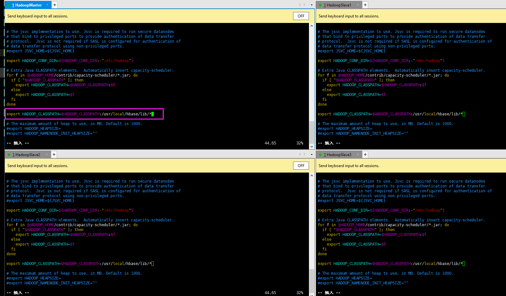
原来的视频教程用的是1.3.1版本的，故执行官方案例是这样执行的
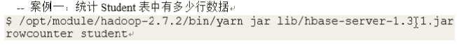
最后结果
但本教程是2.x版本，都很多个版本了，执行之后找不到对应的类，解压了也没看到该类，后来找到在其他jar，也还是不行，就算了，但是前面的环境变量、MR所需的依赖，后面自定义的例子应该都是需要，需要我是配置上了。
自定义HBase-MapReduce
注意，环境变量、MR所需的依赖可能需要配置，详情见 官方HBase-MapReduce
1）HBase -> MR -> HBase
将HBase表的数据，通过MR迁入到另一个HBase表中，即从HBase读到MR再写到HBase中。
创建表
创建一个HBase的表，并填入数据

解释
Ctrl + Alt + B显示实现类，Mutation是写数据到HBase的类型，可以看到有四个实现类
这个ToolRunner的源码可以看到，其实就是调用我们HBaseDriver驱动类的重写setConf、run方法，通过命令行执行HBaseDriver所携带的参数最后进入到了run方法。
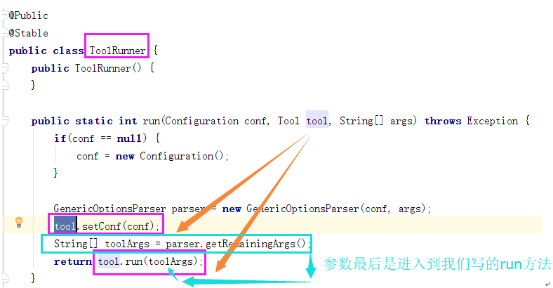
代码
只涉及紫色框内的代码
pom.xml
|
<?xml version="1.0" encoding="UTF-8"?> |
HBaseMapper
|
package hbase_to_mr_to_hbase; |
HBaseReducer
|
package hbase_to_mr_to_hbase; |
HBaseDriver
|
package hbase_to_mr_to_hbase; |
测试
Maven打包
上传到Hadoop的master机子
执行yarn jar或者hadoop jar（启动yarn集群之后，hadoop jar就等同于yarn jar），注意驱动类需要包含包名。
然后报错，可以看到一直连接的是localhost:2181这个zk，我的master是没有zk的，只有slaveX有
报错内容
|
19/06/24 11:47:36 INFO zookeeper.ClientCnxn: Opening socket connection to server localhost/127.0.0.1:2181. Will not attempt to authenticate using SASL (unknown error) 19/06/24 11:47:36 WARN zookeeper.ClientCnxn: Session 0x0 for server null, unexpected error, closing socket connection and attempting reconnect java.net.ConnectException: 拒绝连接 at sun.nio.ch.SocketChannelImpl.checkConnect(Native Method) at sun.nio.ch.SocketChannelImpl.finishConnect(SocketChannelImpl.java:717) at org.apache.zookeeper.ClientCnxnSocketNIO.doTransport(ClientCnxnSocketNIO.java:361) at org.apache.zookeeper.ClientCnxn$SendThread.run(ClientCnxn.java:1081) |
上网搜索，很多情况都会导致这个问题，都试过了，都不是，最后只能靠自己了，最后找到代码问题（下图紫色部分代码，原视频教程也是没有这代码的），之前写过一个TestBase.java已经写过了，所以脑子里面就以为就不用再写了，结果测试用了不同的类。就是configuration要写连接哪个zk。

再执行一遍，终于不连接localhost了，然后下面还有报错，是没有创建表，创建就得了。

创建即将被写入的表
可以看到执行的过程启动了map、reduce
用HBase shell，可以看到只有info:name的信息，这就是预期的结果
结合代码分析一下，Mapper端只接收列名为name，Reducer端直接拿到Put对象就写出去了，就写到HBase，通过Driver设定从哪个表读入Mapper端，Reducer端将写出到哪个表。
2）HDFS写入HBase表
将HDFS中的数据写入到HBase表中。
准备数据
编辑一个文件
中间用Tab键隔开，即\t，注意不要有空行，否则后面会报错。
上传到HDFS上
创建fruit2表，从HDFS读取的数据就是放到这里。
代码
pom.xml
|
<?xml version="1.0" encoding="UTF-8"?> |
HDFSMapper
|
package hdfs_to_hbase; |
HDFSReducer
|
package hdfs_to_hbase; |
HDFSDriver
|
package hdfs_to_hbase; |
测试
用Maven打包
删除旧的（因为前一个例子也是这个jar包），重新上传
Hadoop的master主机执行，从HDFS系统的根目录读取input_fruit文件

报错，说Row的长度为0，即行数有空行。
把前面准备的数据看了一下，发现有空行，所以报错，因为代码没有对空行考虑。
删掉空行
重新执行命令

执行成功
查看fruit2表，就有数据了
8、与Hive集成
题外：
ELK是三个框架，ETL是三个单词，数据的加载、抽取、转换
ETL跟着业务线走，业务经常改，经常加班，啥还少，给业务线做准备的，也没有什么技术含量。
HBase与Hive的对比
Hive
数据分析。
HBase
数据存储
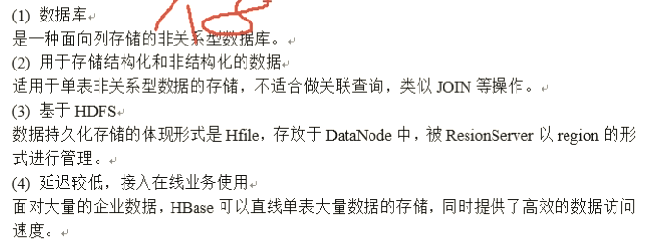
HBase与Hive集成使用
为了使用SQL来分析HBase的数据。
兼容问题
网上找了这个版本兼容问题，本教程用HBase2.0.5、Hive2.1.1，不兼容的需要重新编译打包。
环境准备
注意要有HBASE_HOM、 HIVE_HOME
后续操作Hive需要持有操作HBase的jar，可以拷贝或者软连接Hive所依赖的HBase的jar包。个人简单粗暴全部复制过去，有相同的jar，不覆盖（按n按回车）或者忽略（直接按回车）
在hive-site.xml中修改Zookeeper的属性（hive只在我的mater有）
打开hive下的conf目录的hive-site.xml文件
搜索hive.zookeeper.quorum，可以看到是没有任何值的
配上zk的集群的ip或主机名
端口已经默认了
案例1
建立Hive表，关联HBase表，插入数据到Hive表的同时能够影响HBase表。
进入hive
随便找一个表来看看，创建表时的这个表的详细信息，如橙色部分。
或者这样的（视频教程里面）
1）在Hive中创建表同时关联HBase表
HQL内容
|
CREATE TABLE hive_hbase_people_table( id int, name string, sex string, old int) STORED BY
'org.apache.hadoop.hive.hbase.HBaseStorageHandler' WITH SERDEPROPERTIES ("hbase.columns.mapping"
= ":key,info:name,info:sex,info:old") TBLPROPERTIES
("hbase.table.name" = "hbase_people_table"); |
查看Hive、HBase表
2）在Hive中创建临时中间表，用于load文件中的数据
准备数据，找个目录把hive_hbase_input.txt上传到master
文件内容
|
2001,zhangsan,male,19 2031,lisi,male,12 2802,wangwu,female,20 2901,xiaoliu,female,27 |
put到HDFS上
当然不上传到HDFS上也可以，加载数据用：load data local inpath '本地路径' ，即可。
执行load，发现报错，这是因为不是原始的Hive表，这是关联HBase的表，故不能用load，所以才需要中间表。

|
load data inpath '/hive_hbase_input.txt' into table
hive_hbase_people_table; |
创建中间表（原始Hive表），当然这个表后面加了逗号分隔
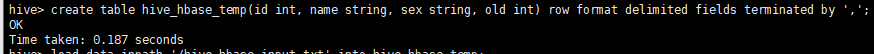
|
create table hive_hbase_temp(id int, name string, sex string, old int)
row format delimited fields terminated by ','; |
load进去原始的中间表，就不报错了。
|
load data inpath '/hive_hbase_input.txt' into table hive_hbase_temp; |
查看一下数据
3）通过insert命令将中间表的数据导入Hive关联HBase的表
insert
通过select中间表，然后insert到Hive关联HBase的表
|
insert into table hive_hbase_people_table select * from hive_hbase_temp; |
一连串的错误
都是jar包不兼容的问题
hive --hiveconf hive.root.logger=DEBUG,console （hive启动时用该命令替代，可以查看日志）
1、
Caused by:
org.apache.hadoop.hive.ql.metadata.HiveException: java.lang.NoSuchMethodError: org.apache.hadoop.hbase.HBaseConfiguration.createClusterConf(Lorg/apache/hadoop/conf/Configuration;Ljava/lang/String;Ljava/lang/String;)Lorg/apache/hadoop/conf/Configuration;
Google（百度找不到）找到繁体字或英文的文章，复制hbase下的lib到hive的lib之前要先删除Hive的lib下的hbase开头的jar包，然后再复制，但我没有删除，导致了上面的错误，既然我已经全部复制了，那就删除Hive的lib下的hbase开头的所有jar，然后把HBase下的hbase开头的jar都复制过去，最后记得要退出当前的shell命令交互，重新进入shell，否则无效。（这种问题都是jar包不兼容的问题）
2、
ClassNotFoundException:
org.apache.commons.lang3.NotImplementedException
又是兼容问题，自己动手，找一下org.apache.commons.lang3.NotImplementedException，进入hive的lib目录，查看commons-lang3的jar包，发现有两个版本（注意可视化界面的需要排序，否则可能只看到一个，我就是差点就没看到有两个）
结果发现3.1版本的没有NotImplementedException，估计程序就是用了这个包，还以为会用最新的。
3.6版本的有NotImplementedException
那就把3.1的删除
退出hive交互，重新进入（因为我开了多个xshell远程窗口，都是master的）
3、
执行完命令的开头也有一个报错，虽然我觉得这个报错无关要紧（后面又没有了）
ERROR
[e7d646b6-e9b1-4382-b391-feebef2195c4 main] hdfs.KeyProviderCache
(KeyProviderCache.java:createKeyProviderURI(87)) - Could not find uri with key
[dfs.encryption.key.provider.uri] to create a keyProvider !!
NoSuchMethodError:
org.apache.hadoop.hbase.client.HBaseAdmin
HiveMetaStore: admin role
already exists
Execution Error, return
code 2 from org.apache.hadoop.hive.ql.exec.mr.MapRedTask
试过（不行）：set hive.exec.max.dynamic.partitions.pernode=500;
Execution
Error, return code 1 from org.apache.hadoop.hive.ql.exec.DDLTask
java.lang.NoSuchMethodError:
org.apache.hadoop.hbase.client.HTable.<init>
都遇到过，总之，快把自己给整死了。
最后解决
删除这个两个表hbase_people_table、hive_hbase_people_table。
重新创建（多了一行，但我觉得无关要紧的）
|
CREATE TABLE hive_hbase_people_table( id int, name string, sex string, old int) row format delimited fields terminated by ',' STORED BY 'org.apache.hadoop.hive.hbase.HBaseStorageHandler' WITH SERDEPROPERTIES ("hbase.columns.mapping" =
":key,info:name,info:sex,info:old") TBLPROPERTIES ("hbase.table.name" =
"hbase_people_table"); |
然后创建也报错了
但之前都可以创建的（之前是1.1.1的），现在发现hive下的lib的hbase的包都是2.0.5
所以换回来（1.1.1），下图
然后通过hive命令启动，再创建就行了
查看结果
再执行insert语句，就成功了
Hive的hive_hbase_people_table
HBase表的hbase_people_table
数据在HBase，而Hive上只有一个目录。（load一个txt文件是无法直接存到一个Byte字节存储的HBase上的）
案例2
应用还是这个案例多一点。
在HBase中已经存储了某一张表，比如hbase_people_table（案例1已经创建了），然后再Hive中创建一个外部表relevance_hbase_people（内部表，当别人引用时，我这一删除就都没有了）来关联HBase中的那张hbase_people_table表，使之可以借助Hive来分析HBase这张表中的数据。
在Hive中创建外部表
两个表都没有就都会创建，如果HBase中已经有了，就会关联HBase的表。
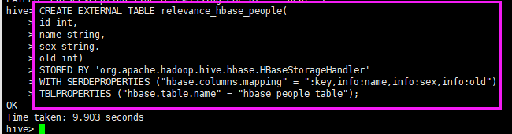
语句内容，就多了一个EXTERNAL
|
CREATE EXTERNAL TABLE relevance_hbase_people( id int, name string, sex string, old int) STORED BY
'org.apache.hadoop.hive.hbase.HBaseStorageHandler' WITH SERDEPROPERTIES ("hbase.columns.mapping"
= ":key,info:name,info:sex,info:old") TBLPROPERTIES
("hbase.table.name" = "hbase_people_table"); |
关联后就可以使用Hive函数进行一些分析操作了
select一下就有数据了
9、HBase优化
高可用
在HBase中HMaster负责监控HRegionServer的生命周期，均衡HRegionServer的负载，如果HMaster挂掉了，那么整个HBase集群将陷入不健康的状态，并且此时工作状态并不会维持太久，所以HBase支持对HMaster的高可用配置。
先关闭HBase集群
在HBase的conf目录下创建backup-masters文件，并且写入备份的主机名
启动HBase集群，就可以看到master主机启动之外，还有slave1也启动了作为master。
访问http://192.168.56.100:16010
也可看到（192.168.56.100就是master主机）
访问slave1:16010，可以看到当前活跃的Master是master主机
kill掉活跃的master
再看，原来master就不能访问了
slave1就变成了Master
预分区
默认的自动分区
根据下图，公式：Min( *
"hbase.hregion.memstore.flush.size", "hbase.hregion.max.filesize")，第一次切割（R也就是1），按照公式取128M、10G的最小值，所以128M就会切割。第二次切割是512M切，一次类推。
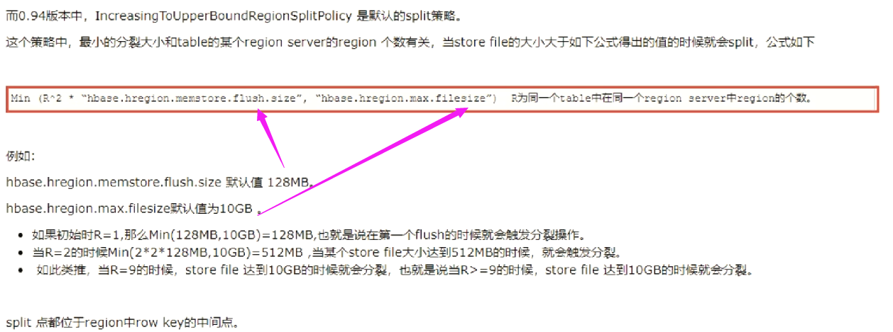
切割的时候，对半切，然后再第二块追加数据，当第二块够512M了就切割这第二块，后面再第三块追加数据，所以最后最小块的是64M（教程说是128M，都不重要），最大的10G。
这是自动分区，这样子最大与最小就差距很大，导致了负载不均衡（每个HRegionServer负责的Region的大小差距太大了），所以要预分区。
找个表看看，可以看到默认StartKey、EndKey是空的，并没有分区。
分区
手动设定分区
创建表，并且划分区1000 2000 3000 4000，四个分界，即五个分区
看一眼
点击表名进来，就可以看到分区，有些分区还在不同的主机上。
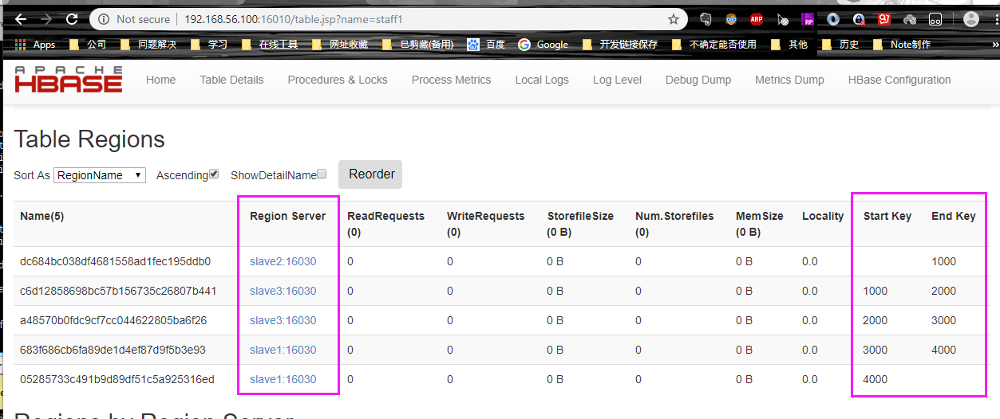
通过预估数据量来进行预分区，预分区跟rowkey的设计有关。
16进制序列预分区
按照文件内容的规则预分区
创建一个split.txt文件，并编辑内容

故意让dddd放在bbbb之前
注意路径与文件的路径有关
可以看到dddd还是排到了后面，说明是自动排序了，不然dddd在前面，那么后面的bbbb、cccc就没有用了。
使用JavaAPI创建预分区
用API创建的情况比较多点
参数是二维数组，因为划分区分的就是一组数据就是一维数组，而HBase的数据本身也是byte存储，所以参数就是二维的byte数组。
预分区的一些工作经验：
一般一个表管理2-3个Region，即一个表分6-9个区（3个HRegionServer的情况下），6个区就是一个节点两个区（3个HRS），9个区就是一个节点三个区（3个HRS），也就是说，当前有3个节点，每个节点维护2-3个Region（是一个表的region）。
RowKey设计
假如分区是下图的分区，来了一个abcd的rowkey，就会一位一位的对比abcd与aaaa-dddd这五个区的分界对比，最终abcd落入aaaa-bbbb区间。
rowkey的设计（够散列，但不能平均分区）
平均分区=随机生成分区键+时间戳+常用字段 （既平均分区也够散列）
简单比如随机生成abcd四个值作为分区键，加一个竖杠或者下划线（比较大，肯定能拦截下来），后面跟时间+常用字段，分区就会对比分区键在aaaa-dddd这里面的哪个区，进行平均分区。
本来分区键随便用Random随机产生即可，但是这样子拿数据比较麻烦，所以通过获取部分字段的值，做Hash散列或者MD5啥的，然后再取整5（aaaa-dddd五个分区），就得到比如是01 02 03 04 05，就可以平均了，以后想获取数据，就可以根据字段的值，Hash或MD5然后取整5，就能组合出来rowkey，就能根据字段直接定位到rowkey直接获取该数据。
实际应用看情况，rowkey的设计一定要跟着业务走
。
比如：
根据上图的问题，怎么把一个月的数据放到一个分区呢？
电话一样、年月一样，就可以设置他们的rowkey放到一个分区里面去。
内存优化
具体看情况。
基础优化
如果生产环境有上千台，那么一台读两个文件就超了。合并的时候会读写很多文件。

任务执行时间可能会很长，MapReduce的默认是7天，这个就太长了
RegionServer处理的请求
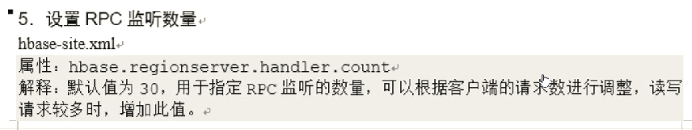
自动切分才会用到，如果自动切分没有关闭，太大了最后还是会切割的，但一般不用关闭，万一真的超了呢预分区很难也有失误。
这个就是那个BlockCache